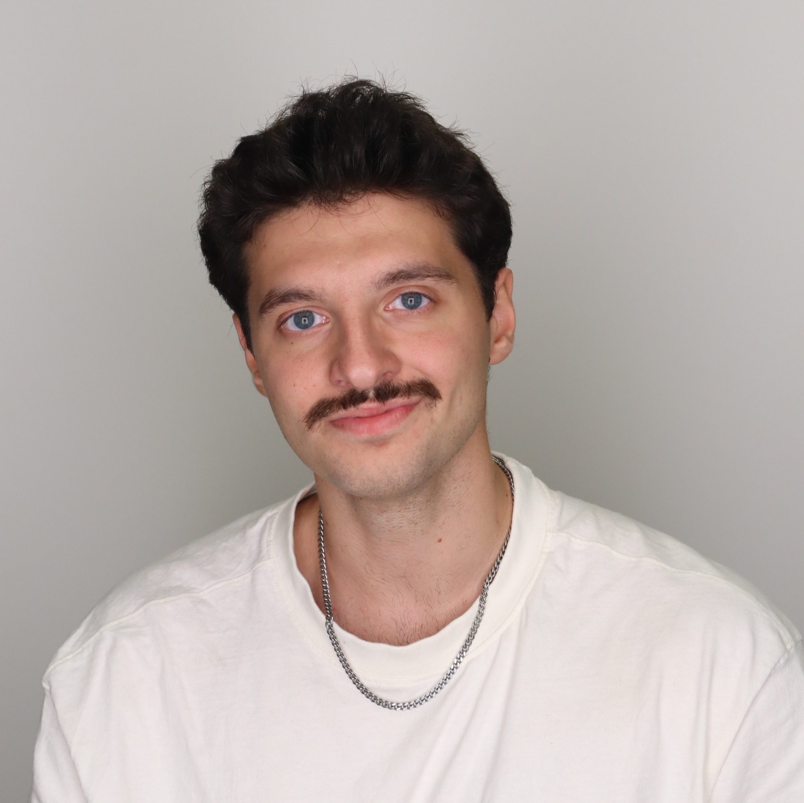

Erkan Altundal

Summary
Currently, I am a Computer Science student at University of Central Florida, where I focus on system-level programming and software engineering. I am proficient in C, Python, and Java, and these projects attest to my skills in low-level memory management and user interface design.
I also have experience in team-oriented roles. I have held various positions, from mentoring Walmart associates to working under tight deadlines in fast food restaurants. All of these roles helped to refine my soft skills and improved my communication, adaptability, and leadership capabilities.
Currently, I am searching for vacancies with systems software, backend development, or cybersecurity. In my open projects, I want to integrate my technical skills, interact with a team, and most importantly, expand my knowledge.
Education
- University of Central Florida - Orlando, FL
Bachelor of Science in Computer Science, Summer 2026, GPA: 3.5
- Valencia College - Orlando, FL
Associate in Arts, December 2023, GPA: 3.5
Work Experience
Walmart Inc
Associate, January 2024 - May 2025
- Utilized Walmart’s digital fulfillment system to pick, stage, and load 100+ online grocery orders per shift, ensuring efficient and accurate delivery to customers
- Verified stock status through Walmart's digital inventory system 100+ times a shift, reducing order errors and improving pick-time efficiency
- Took initiative to mentor new team members on handheld device usage and order workflow, contributing to faster onboarding and improved team coordination
Mario's Pizza LLC
Cook, Driver, Server, January 2020 - July 2022
- Prepared and packaged 40+ Italian meals per shift and delivered to customers efficiently while collaborating with kitchen and service teams
- Served 50–80 dine-in and takeout customers per shift, maintaining accuracy and professionalism in a high-volume restaurant setting
- Trained new hires on delivery routing, order handling, and POS operation, demonstrating leadership and reliability in fast-paced shifts
Vatan Computer
Associate May 2018 - October 2018
- Provided technical support and product guidance to customers purchasing custom-built PCs, components, and gaming accessories
- Demonstrated leadership by taking the initiative to reorganize display layouts for high-demand products, enhancing customer access and sales efficiency
Skills
C, C++, C#, Python, Java, JavaScript, CSS, HTML, SQL
Microsoft (Word, Excel, PowerPoint)
Google (Drive, Docs, Slides)
Well-adapted to teamwork
Written and oral communication skills
English (Fluent) and Turkish (Native)